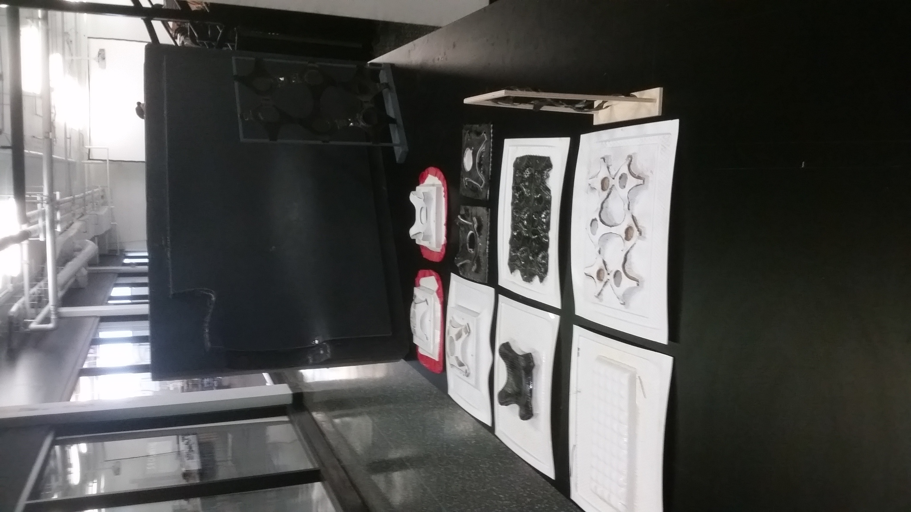
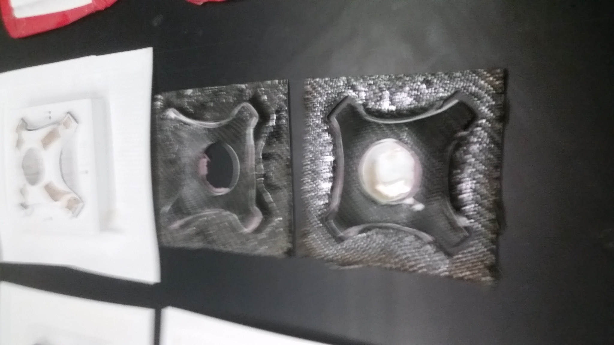
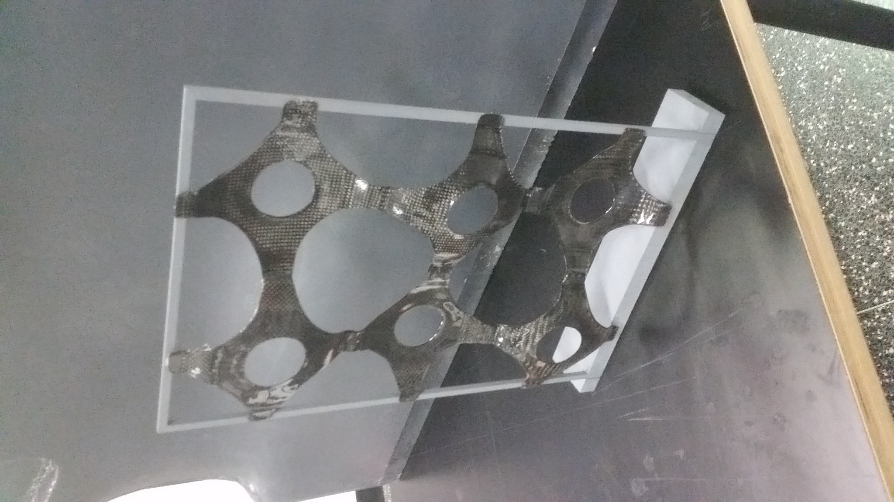
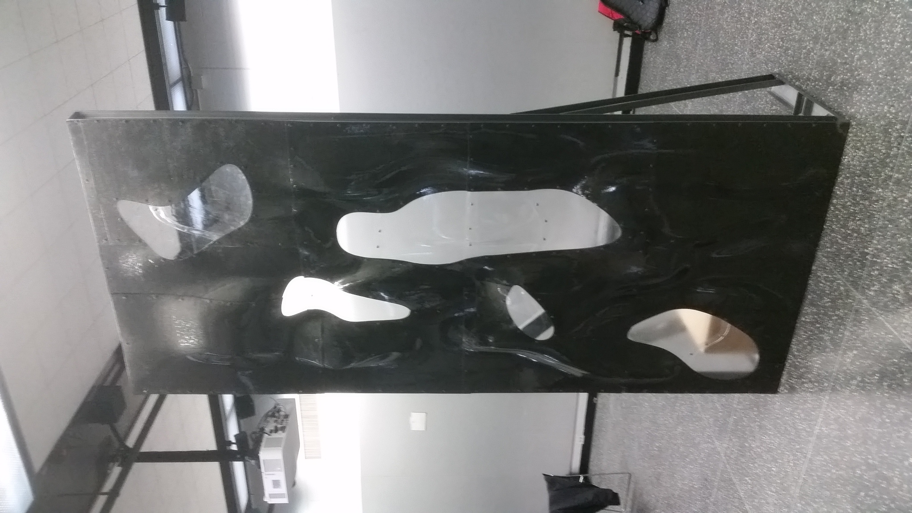

My name is Konstantin Ivaylov Marinov. I was born in Sofia, Bulagaria on May 3rd, 1992. I will be 24 years
old this year. I have a younger sister named Anna. When I was three years old my father, Ivaylo, came to
America. My mother, Irina, moved to America the year after. My sister and I were taken care of by our
grandparents until we were able to come to America ourselves. In October of 1999 my sister and I were on a
plane for the first time in our lives on our way to be reunited with our parents. From 1999 to 2006 we
lived at 7520 North Claremont in Rogers Park. The building was owned by friends' of my parents who they
knew from Bulgaria. I started first grade at George B. Armstrong. I attended that school until half way
through seventh grade. My closest group of friends, who I still see frequently to this day, were made in
those seven years. My family moved to Buffalo Grove because my parents wanted a better education for my
sister and I. I finished off my second half of seventh grade and eighth grade at Cooper Middle School. From
there, I went to Buffalo Grove High School for then next four years. In thinking about my future at the
time, I wanted to be a plastic surgeon. However, that was quickly crossed off the list when I took biology
and chemistry classes. My father owns a construction company and I worked with him several summers during
high school and that is when I decided that I wanted to pursue architecture as my major at IIT. The summer
before starting college was the first time I went back to Bulgaria since I had moved to America. My parents
to this day have not been back yet.
In Digital Fabrication we learned how to use a CNC mill to make molds which we would later use to lay carbon fiber
on. The goal of the class was to create a part of a large panel which has been put together throughout four semester.

Different molds were made throughout the semester in order to practice using the CNC and getting accustomed
to laying out carbon fiber.

Testing different sizes and types of molds.

Finished model of our midterm.

Finished model of four semesters of work.